Introduction
Tout au long de mon stage chez Hydro-Québec, ma principale tâche était de faire le développement de différentes applications Web. Je peux facilement dire que j’ai acquis beaucoup de nouvelles connaissances et que j’y ai aussi approfondie certaines que j’avais déjà acquises. J’ai travaillé avec un grand nombre de langages de programmation et de technologies différentes. Par exemple, j’ai travaillé avec SQL, HTML, CSS, PHP, JavaScript, XML, etc. Je dirais que ce que j’ai le plus amélioré, au cours des derniers mois, sont mes connaissances au niveau Web et plus particulièrement celles en JavaScript. C’est entre autres l’utilisation de la librairie JavaScript DHTMLX qui en est la cause. C’est d’ailleurs à propos de cette librairie que portera mon rapport technique puisqu’elle a été quelque chose de nouveau pour moi niveau informatique et qu’elle compose une majeure partie de mon stage.
Qu’est-ce que DHTMLX?
DHTMLX est une librairie JavaScript qui vient nous offrir une panoplie d’éléments graphiques à utiliser lors de la création d’une application Web. Que ce soit un menu, une barre d’outils, un formulaire ou n’importe quoi d’autre, on peut trouver tous les éléments graphique qu’on veut dans celle-ci. DHTMLX nous donne aussi la possibilité de gérer de nombreux événements de notre application Web en lien avec ses différentes composantes. Par exemple, on serait en mesure de gérer le clic d’un utilisateur sur un item de notre menu DHTMLX. C’est une librairie qui est très performante lorsqu’il est temps de créer des applications Web assez complexes sans trop de temps. Sa grande facilité d’utilisation est vraiment d’une grande aide au programmeur et vient la démarquer comme librairie.
Utilité, points positifs et points négatifs
Comme je le citais plus haut, cette librairie est extrêmement performante lorsque vient le temps de développer des outils complexes et de façon rapide. Cela nous sauve beaucoup de temps de développement puisqu’une grande partie du code que l’on devrait écrire en HTML normalement est gérée par DHTMLX par défaut. En effet, on ne fait qu’appeler le constructeur de l’objet DHTMLX tout en le configurant et le tour est joué!
Donc, pour faire une tâche similaire, faire l’usage de la librairie DHTMLX au lieu que du HTML pur comporte beaucoup d’avantages :
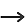 Compatible pour tous les principaux navigateurs Web tels que Internet Explorer (version 8 et plus), Firefox, Safari, Opera, Chrome, etc.
La librairie est vraiment facile à utiliser et à maîtriser rapidement.
Pour quelqu’un ayant une bonne connaissance de la programmation Web ainsi que de la programmation orientée objet, il est facile de vite maîtriser la librairie à l’aide de
la documentation en ligne qui est très détaillée et complète.
En effet, après quelques jours de stages seulement, je commençais déjà à être très à l’aise avec la librairie.
La documentation de la librairie est vraiment bien construite et accessible.
En fait, cela rend la résolution des problèmes rencontrés ou de quelconques questionnements vraiment facile.
On y trouve toutes sortes d’informations concernant les différents objets et leurs fonctions ainsi que de nombreuses démonstrations pour nous aider dans le développement.
Malgré tous ces avantages, c'est en utilisant la librairie régulièrement que j’ai remarqué quelques points qui pourraient être considérés comme des désavantages de DHTMLX.
Les éléments DHTMLX ont un style particulier qui est assez difficile à changer comme on veut avec le CSS.
On peut changer l'apparence facilement avec quatre «skins» qui nous sont offerts par la librairie. Il s'agit des styles nommés Skyblue, Web, Terrace et Material.
On reste tout de même très limité avec ces options si on ne veut pas se lancer dans le CSS pour modifier les éléments graphiques.
Encore là, les objets DHTMLX sont assez difficiles à modifier avec le CSS. On peut voir de quoi on l'air les différents skins
ici.
Il y a une version standard et pro de la librairie DHTMLX.
En effet, si on ne désire pas dépenser pour faire l’achat de la version pro, on pourrait être limité à un certain moment dans ce qu'on veut créer comme application.
Comment on l'utilise chez Hydro-Québec
Chez Hydro-Québec, pour le stage, on utilise la version pro de la librairie. Celle-ci est utilisée en majorité un peu partout en tandem avec d’autres technologies au centre d'opération TI. Par exemple, elle est utilisée le portail OETIC qui rassemble des liens vers plusieurs outils qui aident les usagers dans leurs tâches à l’interne. C’est là que j’ai programmé mes différents outils Web et c’est presque entièrement fait à l’aide de DHTMLX. On pourrait donc dire que cette librairie est assez primordiale au fonctionnement de l’entreprise. C'est vraiment une bonne façon de créer des outils puissants, beaux et qui sont prêts à être utilisés rapidement.
Éléments utilisés principalement
Il y a une panoplie de composantes graphiques dans la librairie comme on peut le voir ici :
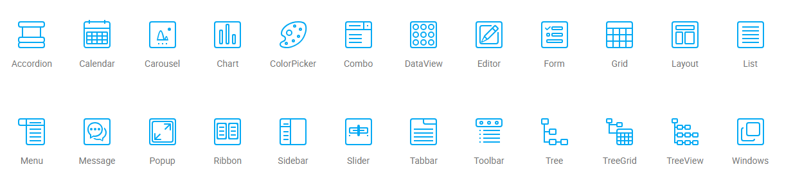
Toutefois, durant mon stage, il y en a certaines que j’ai utilisées plus que d’autres et que j’ai trouvées vraiment impressionnantes niveau performance.
Par exemple, j’ai beaucoup utilisé l'accordéon, la boîte combo, l'éditeur de texte, le formulaire, la grille, le layout, le menu, le pop-up, la barre d'onglets, la barre d'outils, les fenêtres et le planificateur.
D’ailleurs, je vais faire une petite démonstration de l’utilisation de base de certains de ces éléments un peu plus loin.
Initialiser DHTMLX dans un projet Web
L’initialisation de la librairie est vraiment simple à achever et cela se fait en quelques étapes seulement.
1- Tout d’abord, il faut aller sur le site officiel de DHTMLX et télécharger la suite DHTMLX voulue. Dans notre cas, ce sera la version Standard.
2- Il faut ensuite aller créer un dossier qui contiendra nos fichiers du projet.
3- On va chercher le dossier nommé « codebase » à la racine de « dhtmlxSuite » qu'on vient de télécharger et on l’extrait dans notre dossier de projet.
4- On doit créer notre fichier HTML de base « index.html » dans notre dossier de projet à la racine.
5- Dans notre index.html, on doit inclure les fichiers « dhtmlx.js » et « dhtmlx.css » entre les deux balises « head » au début du fichier.
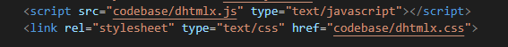
Après ces cinq étapes faciles, nous sommes déjà prêts à commencer à utiliser DHTMLX.
Création d’un composant graphique DHTMLX
Avant de commencer, il faut savoir qu’il y a deux façons de créer des éléments DHTMLX.
On peut en créer directement en JavaScript dans une balise script de notre code HTML et l’attacher à une autre composante.
Par exemple, on peut voir l’initialisation d’une barre d’outils dans une cellule d’un layout ici :
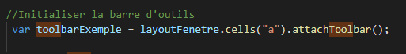
C’est une méthode intéressante, mais je préfère la deuxième qui consiste à créer un élément HTML comme un « div » et à lui lier un objet DHTMLX.
De cette façon, on sépare plus notre code en ayant une première partie qui est un genre de squelette en pur HTML et une autre partie dans nos balises « script » qui applique le DHTMLX.
Je trouve que ça nous donne une utilisation beaucoup plus simple et que ça fait un code un peu plus ordonné.
De plus, ça rend le tout beaucoup plus malléable pour positionner les composantes ou leur donner un style particulier avec le CSS puisqu’on aura pu leur attribuer une classe ou un identifiant.
Toutefois, lorsqu'il s'agit de choses moins complexes, j'aime mieux la première façon d'initialiser un objet DHTMLX.
C'est d'ailleurs de la première façon que nous le ferons dans notre exemple plus tard puisque ce n'est pas d'une complexité trop élevée.
Par exemple, on peut voir l’initialisation d’une barre d’outils dans un div ici :
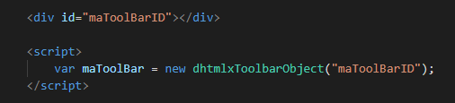
Démonstration
Maintenant que vous savez un peu plus ce qu'est la librairie DHTMLX et à quoi elle sert, il est temps de faire une petite démonstration de comment en l’utilise. Dans cette section, je vais donc vous présenter certaines des composantes que j'ai le plus utilisées avec DHTMLX tout au long de mon stage et que je trouve dignes d'être mentionnées. Je vous présenterai donc un exemple de base typique que j'ai utilisé dans plusieurs des outils que j'ai développés durant le stage. Je vais vous montrer la démarche détaillée de la création, en DHTMLX, d'une fenêtre comportant une grille qui va nous permettre de gérer des données.
Les fenêtres (dhtmlxWindows)
La fenêtre de la librairie DHTMLX est, comme un peu partout ailleurs, un outil très utile pour le développement d'applications.
Je ne m'attarderai pas trop sur ce qu'est vraiment une fenêtre en général, mais plutôt sur comment on l'utilise ici.
Donc, sans plus tarder, voici les étapes pour créer notre fenêtre de base :
1. On va créer une balise div en HMTL qui agira comme un bouton. En cliquant dessus, on appellera la méthode qui va créer notre fenêtre.
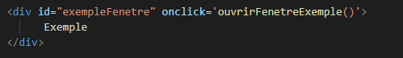
2. Dans notre fonction appelée au clic de notre bouton, on va initialiser notre variable de fenêtres et créer notre fenêtre d'exemple d'après celle-ci. On va ensuite lui donner une configuration minimale de base avec un titre et de
bonnes dimensions.
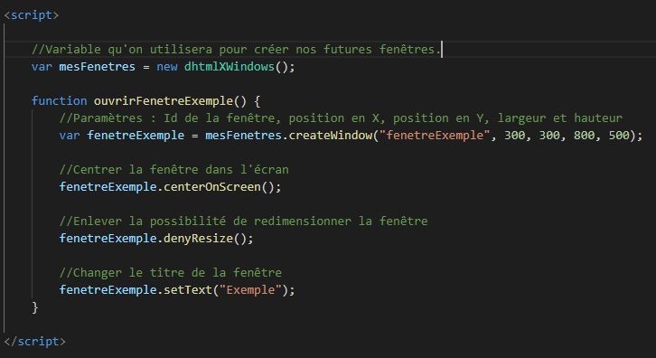
Les layouts (dhtmlxLayout)
Le layout est toujours une composante très importante dans n'importe quel langage et c'est aussi le cas chez DHTMLX. On peut attacher un layout directement autant dans une fenêtre DHTMLX que dans un élément
HTML comme une balise div, body, section, article, etc. Le layout sert surtout à organiser notre page, à lui donner un gabarit de base composé de différentes cellules. Avec notre librairie, on a le choix de
plusieurs modèles et on en précisera un lors de la création de notre layout. En fait, il y a 39 modèles qu'on peut choisir comme on peut voir ici :
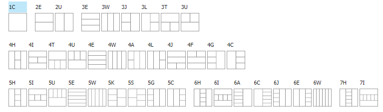
1. Toujours à partir de notre méthode pour créer la fenêtre, on initialise un layout de type « 1C » dans notre cas en l'attachant à notre fenêtre.
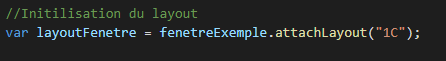
2. On va ensuite changer le titre de la cellule de notre layout. Si on avait un layout à plusieurs cellules, on pourrait changer le titre de chacune d'elles en précisant la lettre de la cellule.
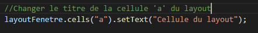
Les Grilles (dhtmlxGrid)
La grille de DHTMLX est, d'après moi, l'outil le plus puissant et le plus pratique de cette librairie.
La grille nous permet de traiter de grands nombres de données venant autant d'une base de données, d'un fichier ou d'autres sources.
Elle nous permet d'afficher des données, de modifier des données, de faire des recherches parmi celles-ci, de les trier via des filtres de colonnes, et bien d'autres options.
C'est un des outils qu'on a beaucoup utilisé dans nos applications Web au cours du stage.
Toutefois, c'est probablement aussi un des outils les plus complexes de la librairie.
Pour notre exemple, on va créer une grille de base dans notre layout et on entrera les données à l’intérieur de façon manuelle avec une boucle. Voici les étapes à suivre :
1. On commence par initialiser notre grille en l'attachant dans la cellule « a » de notre layout et on appelle une méthode où on mettra par la suite le code de configuration de la grille.
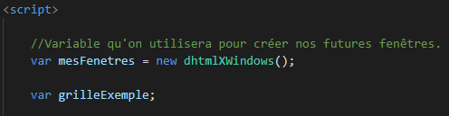
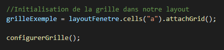
2. On fait la configuration de base de notre grille dans la méthode qu'on vient de créer.
Il s'agit d'une configuration typique d'une grille DHTMLX. Le nombre de configurations possibles est assez élevé et nous n'en touchons qu'une partie dans cet exemple.
Il s'agit des configurations les plus utilisées pendant mon stage, mais, si on voulait en voir la liste complète, on peut se référer à la documentation DHTMLX.
La chose la plus importante à se rappeler est qu'il faut appeler la méthode .init() de notre grille seulement à la toute fin des configurations sans faute.
Sinon, la grille ne fonctionnera pas.
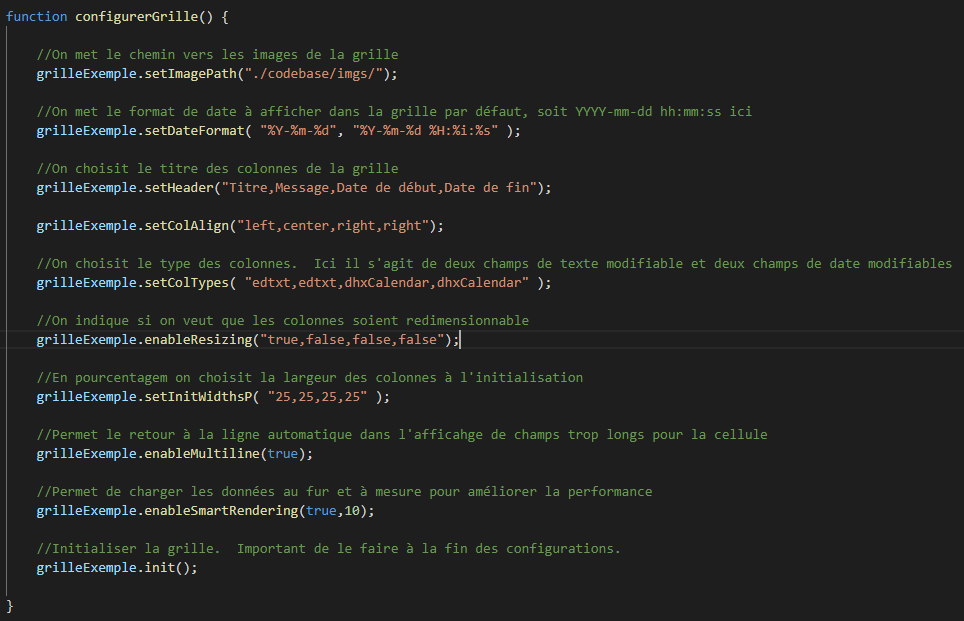
3. Maintenant, il ne reste plus qu'à ajouter les données dans la grille. On va donc générer manuellement des données fictives pour le cas de l'exemple. Toutefois, il faut
savoir que l'on pourrait bien charger des données provenant d'une base de données, de JSON, d'un XML, etc.
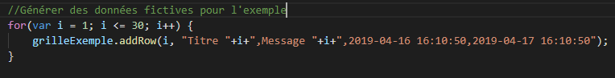
À noter : Il est possible de modifier les données en faisant un double-clic sur une case de la grille et en appuyant ensuite sur la touche entrée lorsque la modification est finie.
La barre d'outils (dhtmlxToolbar)
La barre d'outils est un outil très pratique de la librairie DHTMLX. Celle-ci est généralement située en haut de notre page ou de notre cellule du layout et nous offre toutes sortes d'options qui auront été définies par le développeur de l'application. En effet, on peut y rajouter toutes sortes de boutons qui donneront lieu à différents types d'événements utiles à l'application.
On peut aussi y ajouter du texte et des images.
Dans notre exemple, on créera un bouton qui nous permettra d'ajouter une entrée dans notre grille et un autre qui nous permettra d'en supprimer une.
1. On commence donc par initialiser notre barre d'outils en l'attachant à notre cellule « a » du layout.
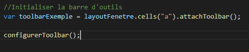
2. On va ensuite configurer la barre d'outils en ajoutant des boutons, des icônes et du texte.
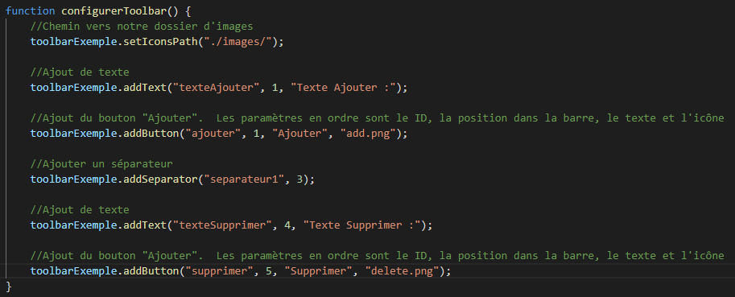
3. Finalement, on va associer des actions à l'événement « onClick » de notre barre. L'événement prend en note l'identifiant du composant cliqué et c'est de cela qu'on se sert
pour déterminer l'action à effectuer par la suite. Il faut noter que cet événement n'est qu'un seul parmi tant d'autres. Pour une liste de tous les événements possibles, on peut consulter la
documentation pour un composant DHTMLX. On peut même pousser un peu plus loin et afficher un petit
message avec DHTMLX pour dire que l'entrée est supprimée ou ajoutée.
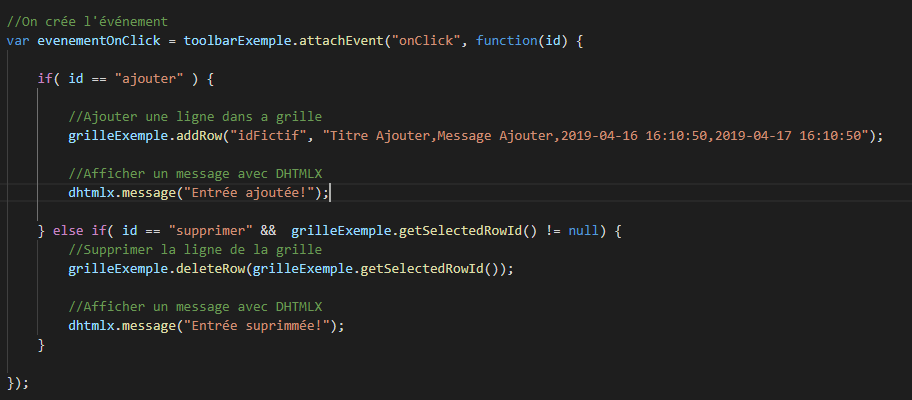
Suite à la démonstration
Après cette démonstration de base, on voit un peu mieux en quoi cette librairie est performante. En effet, on peut créer des objets graphiques assez complexes et, comme on a pu le voir, le faire très facilement et en un temps rapide. On peut imaginer que de créer la même chose en pure HTML, JavaScript et CSS n'aurait pas été la chose la plus efficace ni facile. Ma démonstration vous démontre d’une façon un peu plus simple une grande partie de ce que j'ai fait durant mon stage. En effet, j'ai dû travailler sur beaucoup d'applications qui fonctionnaient déjà avec des grilles ou créer des applications où j'ai dû créer mes propres grilles et manipuler les données associées. Je n'ai démontré que quelques éléments importants de la librairie, mais il ne faut pas oublier qu'on aurait pu ajouter plusieurs autres composantes dans notre application comme des menus déroulants, des boîtes combos, des calendriers, des listes, des diagrammes et j'en passe plusieurs. La librairie DHTMLX est vraiment très complète et offre des milliers de possibilités au développeur d'applications Web.
Mes projets
Il ne faut pas oublier que l’exemple qu’on vient de faire est bien représentatif de la librairie, mais qu’il reste toutefois d’une grande simplicité. Donc, pour vous montrer d’autres exemples d'interfaces plus complexes créées avec DHTMLX, je vais vous présenter brièvement les projets sur lesquels j'ai travaillé durant mon stage.
J'ai travaillé sur un premier projet relié à l'assurance qualité du système de billet utilisé par le centre d'exploitation pour les incidents.
J'y ai amélioré l'affichage des informations qui y sont affichées. J'ai développé un système de diffusion pour les billets également.
Par exemple, une personne peut maintenant diffuser un billet qui a besoin d'être vérifié à une certaine personne.
Sinon, j'ai aussi développé une vue qui affiche différentes statistiques du centre d'exploitation pour l'équipe selon différents filtres.
Ce fut probablement le projet sur lequel j'ai travaillé le plus longtemps lors du stage.
Le deuxième projet sur lequel j'ai travaillé était une liste qui affiche des tâches de changement.
Il s'agit d'un nouveau module qui permet d'afficher les différentes tâches de changement qui sont en cours et différentes informations sur celles-ci.
Une tâche de changement est créée à la suite d'une demande d'arrêt d'un service pour faire une tâche précise.
Par exemple, on peut faire une demande si on a besoin qu'un service du serveur soit inactif, durant une certaine période, pour faire une certaine tâche et c'est là qu'on crée une tâche de changement.
Bref, j'ai créé une interface comportant différentes grilles qui affiche certaines informations cruciales sur les changements.
Par exemple, on a une grille affichant les tâches en cours, les tâches à venir, les tâches passées, etc.
J'ai aussi développé une fonction de recherche, une vue de détails, un système pour surveiller des changements, un système de messages, une vue de tous les changements en cours, etc.
Ce fut un gros projet assez complexe à réaliser, car il y avait beaucoup d’informations à gérer et les requêtes étaient lourdes.
Mon troisième est une liste qui affiche des incidents et c'est un projet qui est beaucoup moins massif que mes deux premiers.
Il s'agit d'une grille qui prend toute la page affichant tous les incidents et qu'on peut restreindre selon différent types de filtres.
Par exemple, on peut voir les différents incidents par date, par année, par mois, par semaine, etc. Il fallait aussi faire le code pour que chaque utilisateur puisse choisir quelles colonnes de la grille il veut voir, dans quel ordre il les voit et qu’il puisse sauvegarder le tout dans une base de données.
Ce fut probablement la partie la plus difficile du projet.
Toutefois, le projet fut réalisé en seulement quelques jours puisque j’ai pu réaliser beaucoup de code provenant de mes autres projets.
Cela vient nous montrer, encore une fois, à quel point cette librairie est performante pour créer des outils performants et utiles en un temps minime.
Conclusion
En conclusion, pour ce qui est de mon expérience avec la librairie DHTMLX, j’ai presque juste des choses positives à dire. En fait, j’ai beaucoup aimé sa grande simplicité d’utilisation qui m’a permis de créer des interfaces et de gérer des événements rapidement. Toutefois, la seule chose que j’ai moins aimée en faisant son usage est qu’il est assez difficile d’obtenir le style qu’on a en tête en utilisant le CSS avec les composantes graphiques DHTMLX. Selon moi, malgré le style particulier de DHTMLX, cette librairie est vraiment utile pour le développement d’application Web complexes et je la recommanderais sans hésiter à n’importe quel développeur Web. Je vous invite forcement à l'essayer si vous êtes intéressés par le développement Web et je suis sûr que vous ne serez pas déçus!